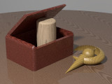

 RC3Wood is a library module proposed for the Persistence of Vision Raytracer (POV-Ray) Object Collection that defines macros that create various wood textures.
| Key Files | |
|---|---|
| File | Description |
rc3wood.html |
The user manual (this document) |
rc3wood.inc |
The RC3Wood library |
rc3wood.pov |
A scene description file demonstrating the features of RC3Wood |
rc3wood.jpg |
Sample output images |
rc3wood_thumbnail.jpg |
|
| Administrative Files | |
| File | Description |
READMEnnnnnn.html |
Important information about using the POV-Ray Object Collection |
rc3wood_description.txt |
A brief description of RC3Wood |
rc3wood_keywords.txt |
A list of keywords |
rc3wood_prereqs.txt |
Prerequisites (empty file) |
rc3wood.css |
Other administrative files |
cc-LGPL-a.png |
|
Versionnnnnnn.js |
|
The italicized nnnnnn in some of the file names represents the 6-digit number that is in the name of the .zip file as downloaded from lib.povray.org. If you downloaded this module from some other repository, the files cc-LGPL-a.png, READMEnnnnnn.html, and Versionnnnnnn.js may not be present. Please see the Object Collection User’s Guide if READMEnnnnnn.html is not present.
RC3Wood requires POV-Ray version 3.5 or later.
All file names in this module and all global and local identifiers defined in rc3wood.inc comply fully with the Object Collection naming standards, as revised August 2008 and proposed August 2012. The files in this module may be safely stored in the same folder as other fully compliant Object Collection modules.
The reserved prefixes for this module are “RC3Wood” and “RC3W,” including any uppercase and lowercase variants. To avoid conflicts, do not introduce into your scene description file any identifiers with either of these prefixes as names, or any identifiers that start with either of these prefixes plus an underscore.
The standard include file functions.inc is used by rc3wood.inc. The identifier View_POV_Include_Stack from the standard include file debug.inc is referenced by rc3wood.inc, although debug.inc itself is not used.
Include this file once prior to using any of the macros:
#include "rc3wood.inc"
Including the file more than once is harmless, though unnecessary.
This specifies the amount of taper in the growth rings. It is directly analogous to grain slope: the larger its value, the closer to cylindrical the rings will be. As a special case, zero yields cylindrical rings.
At this time, the grain itself is not affected by this argument. It is intended that this will change in a future version.
This is an array of 2-D (uv) vectors that determine the color map and slope map of the annual rings. The .u component is the position within the ring, with 0.0 at the inner edge, and 1.0 at the outer edge. These must be in numerical order, from lowest to highest. The .v component is the color at that position, with 0.0 representing the lightest color, and 1.0 representing the darkest color. In-between values are interpolated. Several built-in rings maps are provided.
Creates a wood texture. The grain is aligned with the z-axis and tapered in the z direction. The growth rings are spaced one POV unit apart.
| Formal Parameter | Type | Description |
|---|---|---|
Taper |
float | The amount of taper in the growth rings, or zero for cylindrical rings. (See argument formats.) |
Rings_map |
array of 2-D vectors | The form of the annual rings. (See argument formats.) |
c_Light |
color | The color of the lightest areas. |
c_Dark |
color | The color of the darkest areas. |
Grain_size |
float | The size of the wood grain; use a value much smaller than 1.0. |
Roughness |
float | The roughness of the wood. |
Gnarl |
float | The gnarliness of the wood. |
Stretch |
float | The stretching of the gnarliness along the grain. |
v_Random |
vector | An offset for the gnarliness; use this to avoid repeated wood textures on different objects. |
| Identifier | Type | Description |
|---|---|---|
RC3W_Rings_Thick |
array of 2-D vectors | A map for thick annual rings. |
RC3W_Rings_Thin |
array of 2-D vectors | A map for thin annual rings. |
RC3W_Rings_V111 |
array of 2-D vectors | A map that approximates the annual rings that were hard-wired into RC3Wood version 1.1.1. |
For a proper varnish or lacquer, the finish should use Fresnel reflection, which requires an interior block with a refractive index (ior) greater than 1.
The values below are rough averages derived from sources which may or may not be reliable. Polyurethane in particular was so difficult to source that I just used the values presented up front by Google.
| Identifier | Type | Description | ior |
|---|---|---|---|
RC3W_i_Acrylic_Varnish |
interior | An interior for acrylic varnish. | 1.491 |
RC3W_i_Polyu_Varnish_High |
interior | An interior for a polyurethane varnish with a high refractive index. | 1.63 |
RC3W_i_Polyu_Varnish_Low |
interior | An interior for a polyurethane varnish with a low refractive index. | 1.53 |
RC3W_i_Shellac |
interior | An interior for shellac. | 1.525 |
| Identifier | Type | Description | Value |
|---|---|---|---|
RC3WOOD_VERSION |
float | The RC3Wood version, in case the scene file needs that information. | 2.0 |
Any identifiers in rc3wood.inc that are not documented in this manual are considered “private” and are subject to change or elimination in a future update.
Copyright © 20?? Richard Callwood III. Some rights reserved.
This library is free software; you can redistribute it and/or modify it under the terms of the GNU Lesser General Public License version 2.1 as published by the Free Software Foundation.
This library is distributed in the hope that it will be useful, but WITHOUT ANY WARRANTY; without even the implied warranty of MERCHANTABILITY or FITNESS FOR A PARTICULAR PURPOSE.
| Version | Date | Notes |
|---|---|---|
| 1.0 | 2006 December 10 | The library is created as rc3_wood.inc. |
| 1.1 | 2006 December 17 | The library is given its present name. |
| 1.1.1 | 2008 March 19 | A macro with a roughness argument is added. |
| 1.1.1-20090421 | 2009 April 21 | The last update (of unrecorded nature) is made prior to Object Collection conversion. |
| Version | Date | Notes |
|---|---|---|
| 1.1.1-20090421A | 2023 May 7 | The library is cleaned up for public release and uploaded to GitHub. |
| 2.0 | 20?? ??? ?? | The library is rewritten for future inclusion in the Object Collection:
|
SL - Woods.inc: a wood texture playground, by Sven Littkowski
{kind=link}